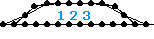
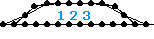

| 136 |
 |
name: Valence
genre: zero-g
comments: This is just a simple counter rotor arrangement, but I like how it turned out. Some how it reminds me of the valence shells in the quantum theory of the electron. I had tuned it as a jumping model, but I like it better in zero-g. |
| 076 |
 |
name: Vector_Analysis
genre: walker/motored
comments: This model uses my WarptMotor just like Vector_Array and started my tradition of naming models with similar power sources with the words 'array' and 'analysis.' The legs are a different design and it required less amplitude, so I think it looks nice and was good practice for me. |
| 060 |
 |
name: Vector_Array
genre: walker/motored
comments: This model used my WarptMotor and I made it because I felt I had been working with flex too long. I was becoming known for making things like mono used to and I wanted to show that I was fully capable of making regular motored walkers. This desire also led to its sharp, un-flex like appearance. |
| 164 |
 |
name: Vector_Squared
genre: walker/motored
comments: This model uses a pair of linear combination motors that produce an elliptical counter rotor pattern. They share one side in common and are braced by a single diagonal spring on each side. I experimented with many different leg styles and motor configurations before I settled on this version. |
| 015 |
 |
name: Veil_of_Being
genre: zero-g/flex
comments: This has an eerie shape that looks like it's flapping in the air. Maybe this would make a good screensaver? The pretentious name is not meant to imply anything specific. |
| 282 |
 |
name: Viscosity
genre: snake/flex
comments: I don't have any particular reason why I named this model Viscosity, but I suppose it looks a little like a pool of molasses flowing slowly across the floor. I saved time by scavenging part of my own Wavino for the construction. |
| 054 |
 |
name: Volvox
genre: amoeba/flex
comments: This is a reprogrammed version of Grey_Bubbles that has one wave cycle instead of two. I assumed that this would make it roll better and luckily I was right. I had to be very careful when tuning it, though. Because too much amplitude made it shrivel up requiring me to untangle it. |


 
